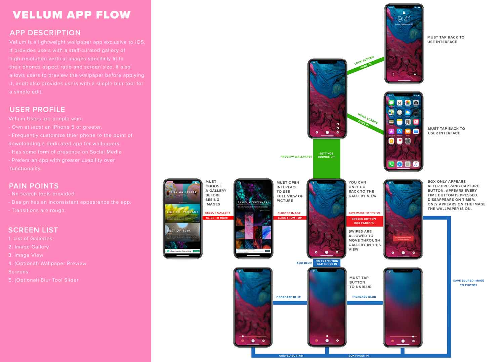
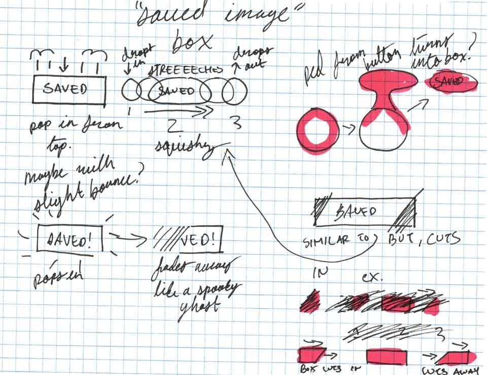

Personal Work
Duel of the Dorks (2020)
A short lightsaber fight animated in After Effects. Edited in Premiere Pro.
Dreampaper IxD (2020)
Prioritizing interaction design, I reimagined Vellum, a wallpaper app, and rebranded it into a new app called Dreampapr. Because the original app appeared too generic, I focused on injecting personality into the design with improved animations and dynamics.
The project started in April, with an evaluation of the original app’s User and App Flow. These charts were created to demonstrate how a typical user would experience the app, showing their journey from the moment they start interacting with it, to the end of their task.
I crafted the rebrand using a combination of Photoshop and Illustrator. The “dreamy” aesthetic for this project was chosen to evoke the artistic side of the app while also incorporating the refinement and simplicity of the original.
Once settled on the aesthetics, I got to work on the interactions. They were first outlined using regular pen and paper, refined in Photoshop, then translated into After Effects.
The project was finalized and submitted in early June.